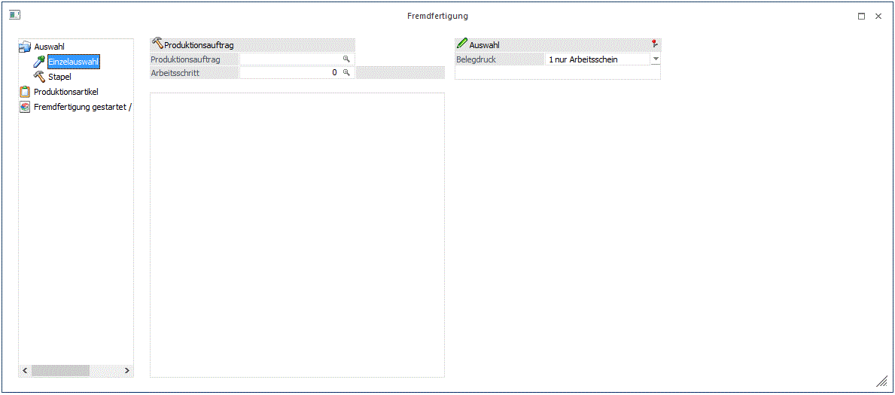
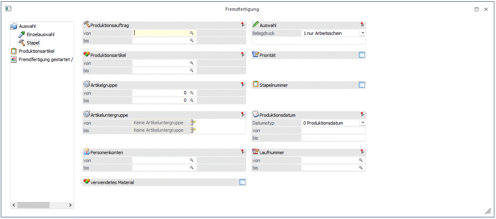

Im Fenster Fremdfertigung gibt es auf der linken Seite einen Navigationsbaum. Wird das Fenster geöffnet ist Eintrag "Einzelauswahl" automatisch aktiv. Mit F5 oder Anwahl mit der Maus kann zum Eintrag "Stapel" gewechselt werden. (Mit STRG+Bild AUF bzw. STRG+Bild AB kann auch zwischen den Menübaum-Einträgen gewechselt werden.)
Einzelauswahl

Ø Produktionsauftrag
Eingabe des Produktionsauftrages, der bearbeitet werden soll.
Ø Arbeitsschritt
Schränken Sie auf einen bestimmten Arbeitsschritt mit diesem Feld ein.
Ø Auswahl
Über diese Option wird gesteuert, welche Produktionsbelege an den Fremdfertiger automatisch übergeben werden sollen. Die Produktionsbelege werden automatisch an den Beleg als Archiveinträge angeheftet.
ü 0 keine Produktionsbelege
Nur
eine Lieferantenbestellung wird erzeugt. Kein Arbeitsschein bzw.
Arbeitsanweisung.
ü 1 nur Arbeitsschein
Sowohl eine
Lieferantenbestellung als auch einen Arbeitsschein wird für den Arbeitsschritt
erzeugt.
ü 2 AS und Arbeitsschein
Eine
Lieferantenbestellung und Arbeitsschein inkl. Arbeitsanweisung werden für den
Arbeitsschritt erzeugt.
Hinweis:
Ein eigenes Formular, P20W71FFG, wird für den Andruck des Arbeitsscheins für den FFG-Arbeitsschrittes automatisch verwendet. Dieses Formular enthält zwei Flags, G und H, womit die erfassten Ausprägungen des Fertigartikels auf den FFG-Arbeitsschein mitangedruckt werden können.
Stapel
In diesem Bereich erfolgt zunächst die Eingrenzung der zu bearbeitenden Projekte.

Ø Produktionsauftrag von/bis
Eingabe aus welchem Projektbereich gewählt werden soll. Wird eine Projektnummer eingegeben, dann wird neben dem Eingabefeld der Produktionsartikel als Info angezeigt. Durch einen Klick auf die Bezeichnung kann eine Drill-Down-Funktion ausgelöst werden. Welche Aktion dabei ausgelöst wird, kann über die rechte Maustaste festgelegt werden (die letzte Einstellung wird gespeichert), wobei folgende Optionen zur Verfügung stehen:
ü Produktionsjournal (Projekt:
xxxx)
Die Produktionsinformationsliste wird für den angeführten
Produktionsartikel ausgegeben.
ü Arbeitsschrittstatus (Projekt:
xxxx)
Der Produktionsauftrag wird im Fenster "Arbeitsschrittstatus" geöffnet.
ü Produktionsliste, Komprimierte
Auswertung, Detailauswertung, Diagramm (Projekt: xxxx)
Die
Produktionsinformationsliste wird in der jeweiligen Konfiguration mit einer von
den gewählten Optionen geöffnet.
ü Produktionsauftrag bearbeiten
Der Produktionsauftrag wird im Fenster "Stückliste bearbeiten" geöffnet.
Ø Produktionsartikel
Welche Produktionsartikel sollen bearbeitet werden. Wird eine Einschränkung vorgenommen, dann wird neben dem Eingabefeld die Artikelbezeichnung angezeigt. Durch einen Klick auf die Bezeichnung kann eine Drill-Down-Funktion ausgelöst werden. Welche Aktion dabei ausgelöst wird, kann über die rechte Maustaste festgelegt werden (die letzte Einstellung wird gespeichert), wobei folgende Optionen zur Verfügung stehen:
ü Produktionsjournal (Projekt:
xxxx)
Die Produktionsinformationsliste wird für den angeführten
Produktionsartikel ausgegeben.
ü Arbeitsschrittstatus (Projekt:
xxxx)
Der Produktionsauftrag wird im Fenster "Arbeitsschrittstatus" geöffnet.
ü Aufruf Info
Es wird der Artikel
in der Artikelinfo im Programm WinLine INFO geöffnet.
ü Artikelstamm
Der Artikel wird
in der WinLine FAKT im Artikelstamm geöffnet.
ü Statistik
Es wird die
Artikelstatistik in der WinLine FAKT geöffnet.
Wird im Feld Produktionsartikel von - bis z.B. nur eine Artikelnummer eingegeben und dieser Artikel hat auch noch Ausprägungen, so werden alle Ausprägungen automatisch mit berücksichtigt. Nur wenn während des Anklicken des "OK-Buttons" die STRG-Taste gedrückt wird, wird nur der Hauptartikel alleine berücksichtigt.
Ø Artikelgruppe
Welche Artikelgruppen sollen bearbeitet werden (betrifft den Produktionsartikel). Wenn auf Artikelgruppen eingeschränkt wird, dann wird neben dem Eingabefeld die Artikelgruppenbezeichnung angezeigt. Durch einen Klick auf die Bezeichnung wird der Artikelgruppenstamm geöffnet.
Ø Artikeluntergruppen
Welche Artikeluntergruppen sollen bearbeitet werden (betrifft den Produktionsartikel).
Ø Personenkonten von - bis
Einschränkung der Personenkonten, für die Produktionsaufträge bearbeitet werden sollen. Das ist allerdings nur dann sinnvoll, wenn die Produktionsaufträge aus der WinLine FAKT übergeben wurden, bzw. wenn beim Produktionsauftrag auch ein Personenkonto hinterlegt wurde. Wenn eine Einschränkung vorgenommen wird, dann wird neben dem Eingabefeld der Namen des Personenkontos angezeigt. Durch einen Klick auf den Namen kann ein Drill-Down durchgeführt werden. Über die rechte Maustaste kann gesteuert werden, welche Funktion dabei aufgerufen wird (die zuletzt verwendete Option wird gespeichert), wobei folgende Varianten zur Verfügung stehen:
ü Aufruf Info
Es wird das
Personenkonto in der Konteninfo im Programm WinLine INFO geöffnet.
ü Personenkontenstamm
Das
Konto wird in der WinLine FIBU im Personenkontenstamm geöffnet.
ü Statistik
Es wird die
Kundenstatistik in der WinLine FAKT geöffnet.
ü Kontoblatt
Es wird das
Kontoblatt in der WinLine FIBU geöffnet.
ü OP-Blatt
Es wird das OP-Blatt
in der WinLine FIBU geöffnet.
Ø verwendetes Material
Es werden nur jene Projekte bzw. Arbeitsschritte angezeigt, bei denen das angegebene Material verwendet wird (dies können Komponenten aber auch Halbfertigprodukte sein). Wird eine Einschränkung vorgenommen, dann wird neben dem Eingabefeld die Artikelbezeichnung angezeigt. Durch einen Klick auf die Bezeichnung kann eine Drill-Down-Funktion ausgelöst werden. Welche Aktion dabei ausgelöst wird, kann über die rechte Maustaste festgelegt werden (die letzte Einstellung wird gespeichert), wobei folgende Optionen zur Verfügung stehen:
ü Aufruf Info
Es wird der Artikel
in der Artikelinfo im Programm WinLine INFO geöffnet.
ü Artikelstamm
Der Artikel wird
in der WinLine FAKT im Artikelstamm geöffnet.
ü Statistik
Es wird die
Artikelstatistik in der WinLine FAKT geöffnet.
Ø Auswahl
Über diese Option wird gesteuert, welche Produktionsbelege an den Fremdfertiger automatisch übergeben werden sollen. Die Produktionsbelege werden automatisch an den Beleg als Archiveinträge angeheftet.
ü 0 keine Produktionsbelege
Nur
eine Lieferantenbestellung wird erzeugt. Kein Arbeitsschein bzw.
Arbeitsanweisung.
ü 1 nur Arbeitsschein
Sowohl eine
Lieferantenbestellung als auch einen Arbeitsschein wird für den Arbeitsschritt
erzeugt.
ü 2 AS und Arbeitsschein
Eine
Lieferantenbestellung und Arbeitsschein inkl. Arbeitsanweisung werden für den
Arbeitsschritt erzeugt.
Hinweis:
Ein eigenes Formular, P20W71FFG, wird für den Andruck des Arbeitsscheins für den FFG-Arbeitsschrittes automatisch verwendet. Dieses Formular enthält zwei Flags, G und H, womit die erfassten Ausprägungen des Fertigartikels auf den FFG-Arbeitsschein mitangedruckt werden können.
Ø Priorität von - bis
Hier wird auf die Priorität eingegrenzt werden. Wird zBsp.: in der Fakturierung ein Auftrag mit Priorität 1 geschrieben und an die Produktion übergeben, dieser Auftrag wird dann eingelesen.
Wenn man nun hier auf Priorität 1 eingrenzt, so wird nur dieser Produktionsauftrag angezeigt bzw. alle Produktionsaufträge mit Priorität 1.
Ø Stapelnummer von - bis
Hier wird auf die dem Produktionsauftrag zugewiesene Stapelnummer eingegrenzt und es werden nur die Produktionsaufträge angezeigt auf die eingegrenzt wurde.
Ø Produktionsdatum
Eingabe des Datums, für das die Reservierung vorgenommen wurden/bzw. geplant waren. Wenn das Fenster über den Menüpunkt Leitstand aufgerufen wurde, kann hier ein Datumsbereich eingetragen werden, über den Tagesleitstand ist nur 1 Tag möglich.
Ø Laufnummer
Einschränkung der Laufnummern die bearbeitet werden sollen.
Drücken Sie auf den OK-Button oder die Taste F5, um in den nächsten Schritt des Assistenten zu gelangen.